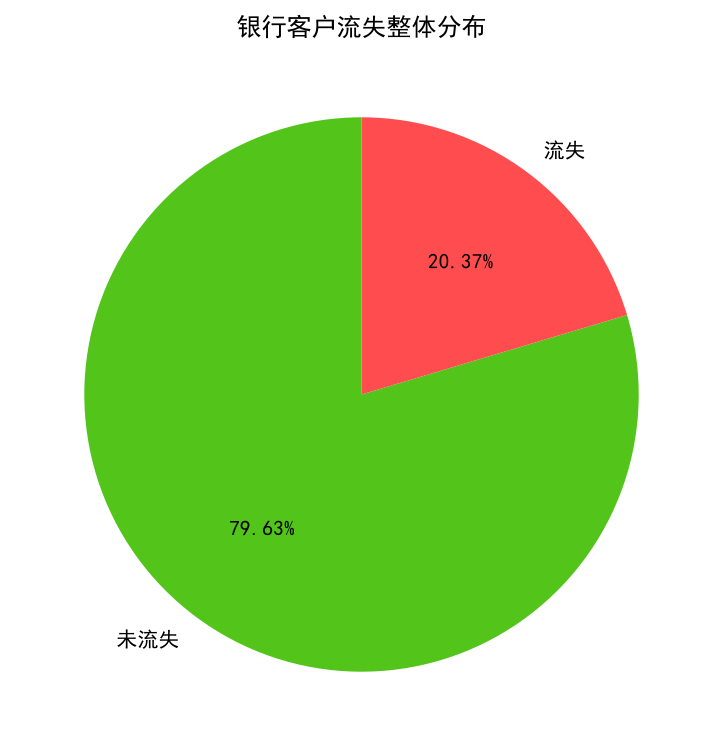
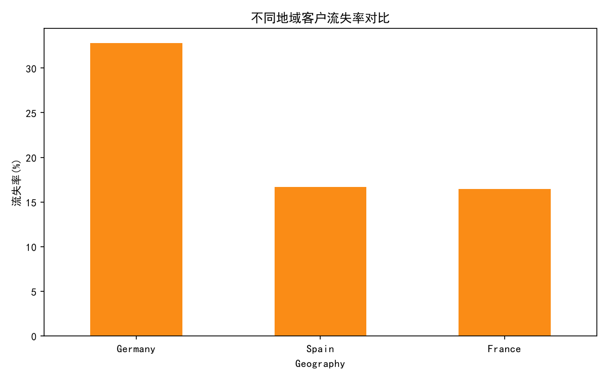
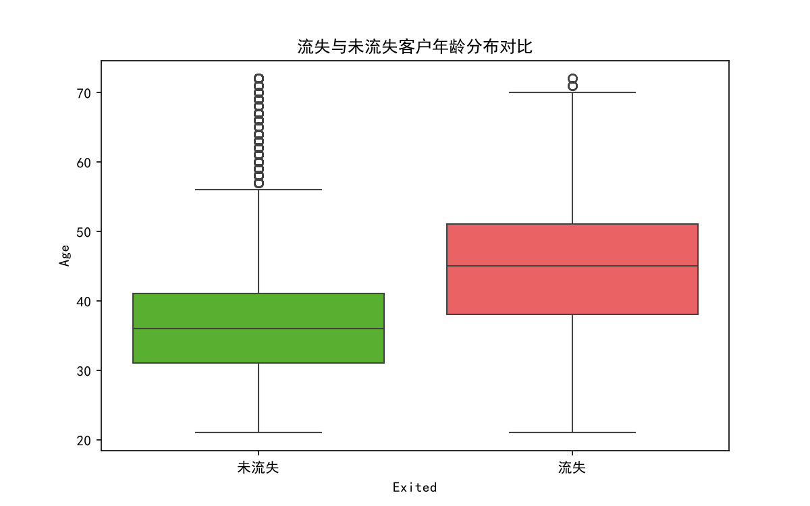
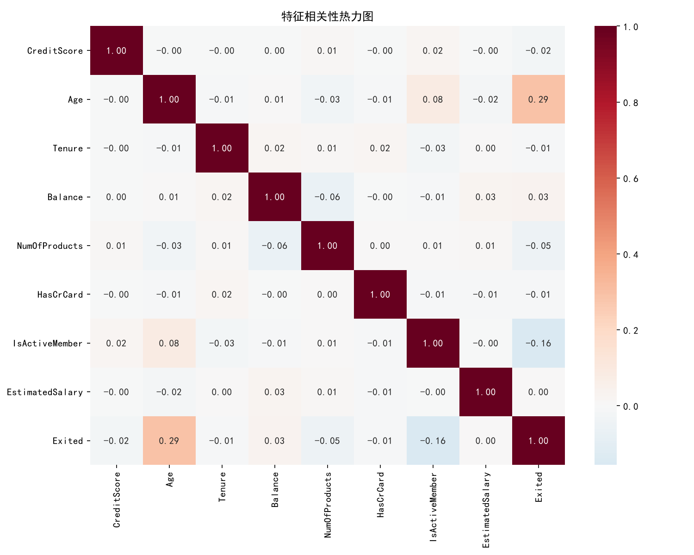
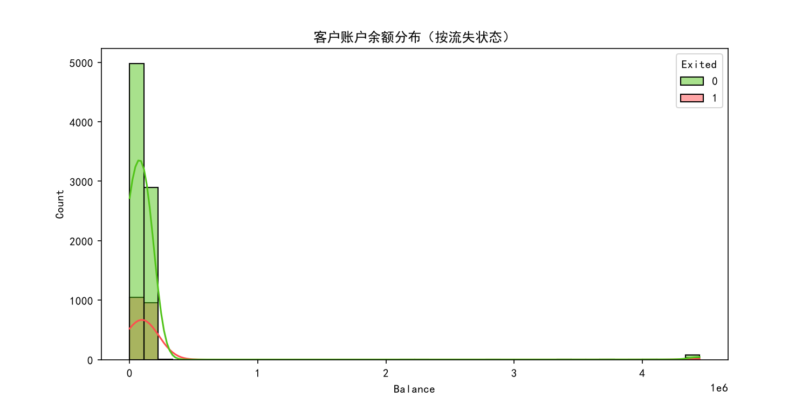
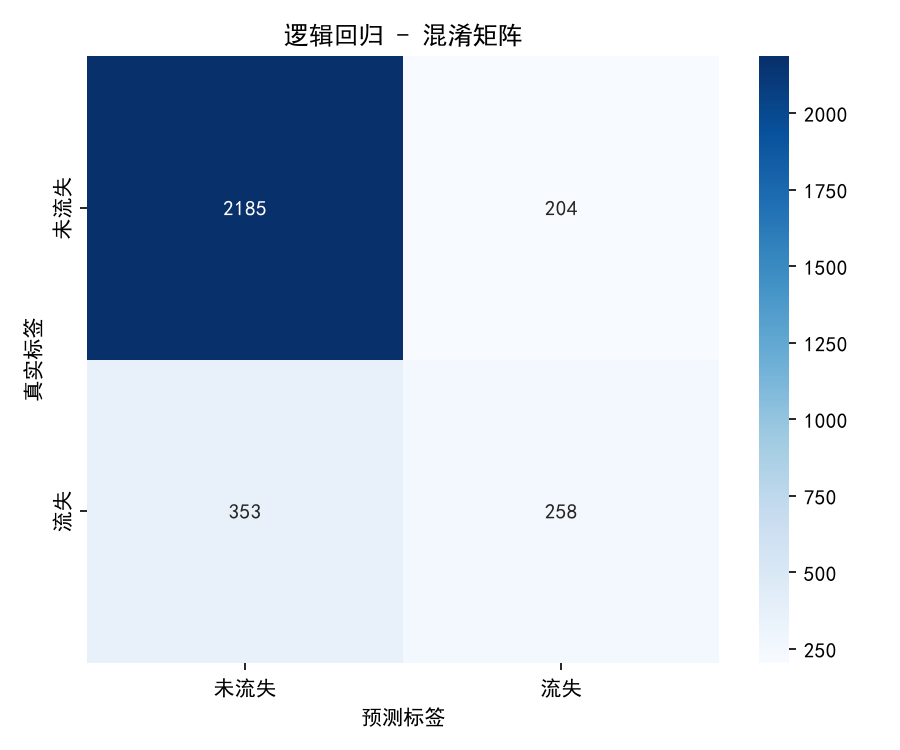
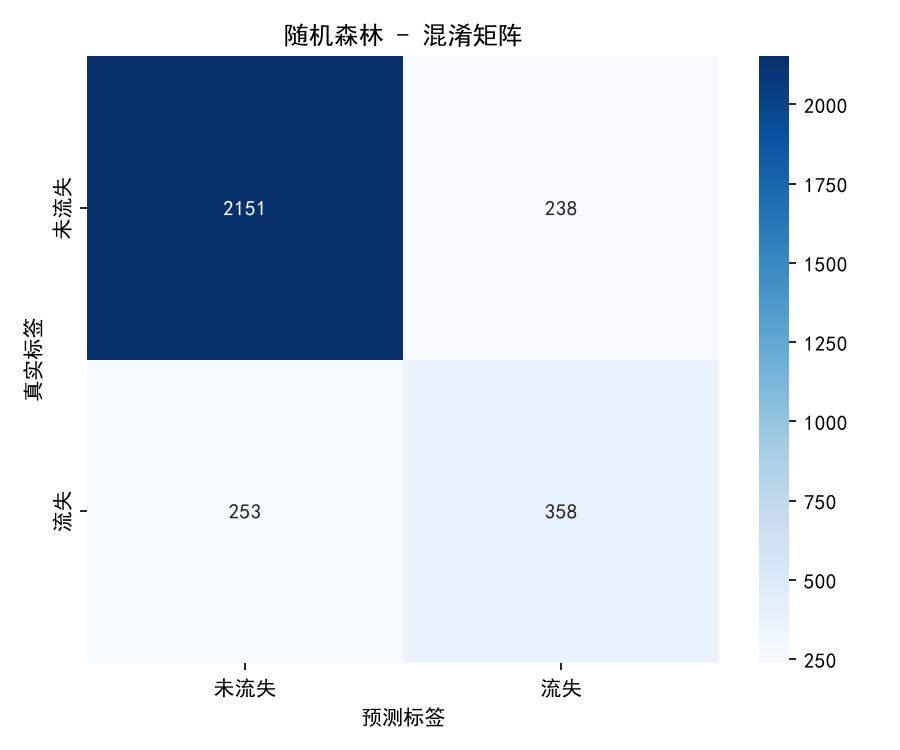
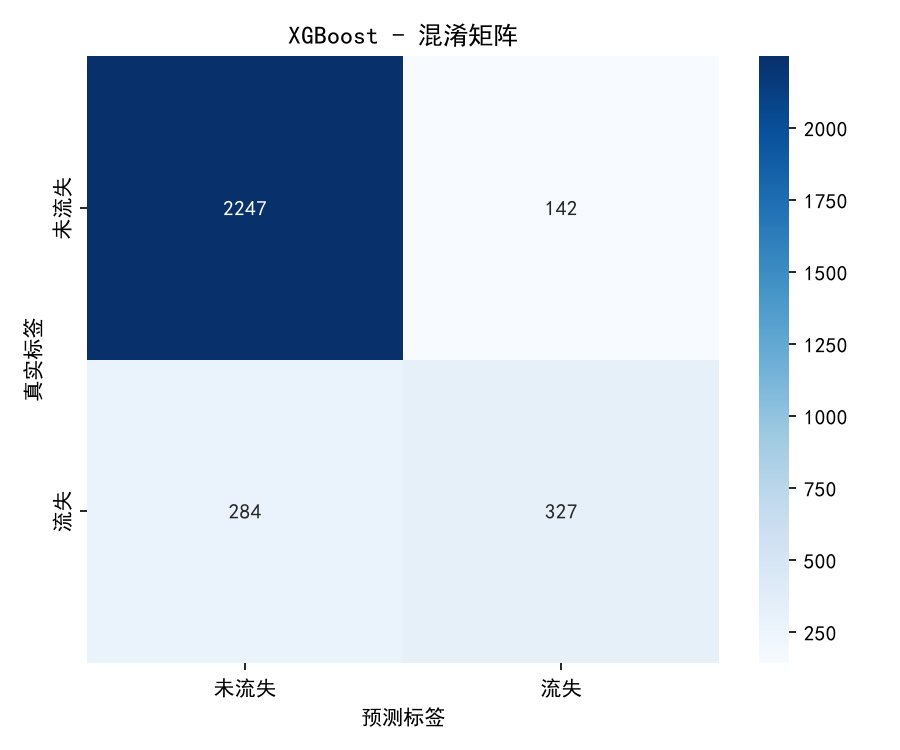
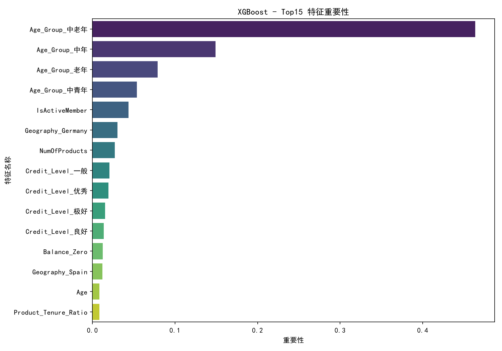

基于机器学习方法的客户流失预测研究

客户流失标签分布

不同地域客户流失率对比

流失与未流失客户年龄分布

特征相关性热力图

客户账户余额分布
| 模型 | 准确率 | 精确率 | 召回率 | F1分数 | 测试集AUC | 5折交叉验证AUC |
|---|---|---|---|---|---|---|
| {{ item.name }} | {{ item.acc }} | {{ item.prec }} | {{ item.rec }} | {{ item.f1 }} | {{ item.auc }} | {{ item.cvAuc }} |

逻辑回归
决策树

随机森林

XGBoost

1. XGBoost模型综合表现最优,测试集AUC可达0.85以上，对客户流失风险具备良好的区分能力。
2. 客户流失是多因素共同作用的结果，人口属性、产品持有、活跃程度、地域均会产生显著影响。
1. 建立流失预警机制：基于模型输出高风险客户名单，提前开展挽留运营。
2. 精准运营策略：针对中老年客户、单产品客户、非活跃客户推出专属权益，提升客户粘性。
3. 产品交叉销售：向存量客户推广更多银行产品，增加客户持有数量，降低流失概率。
4. 区域差异化运营：针对德国地区制定专项挽留方案，降低区域整体流失率。